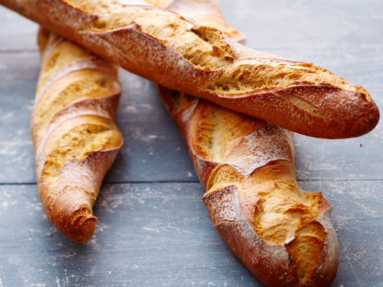
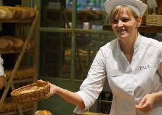

Une baguette de pain ou simplement baguette, aussi appelée baguette de Paris, ou encore pain français (belgicisme), mais aussi pain baguette est une variété de pain, reconnaissable à sa forme allongée. Même si cette forme de pain est emblématique de la France, la baguette est également consommée dans différents pays comme le Maroc, l'Algérie, la Tunisie ou le Viêt Nam, ce qui s'explique par le passé colonial français de ces régions. En septembre 2018, la confédération nationale de la boulangerie-pâtisserie française a reformulé son souhait de voir la baguette de pain être inscrite au Patrimoine culturel immatériel de l'UNESCO. L'adhésion est en cours.
 Nous pensons vraiment que l'alimentation doit être un plaisir de tous les jours, pour tous. Notre mission : amener du goût à chaque occasion, du petit-déjeuner au dîner, des repas sains aux pauses gourmandes. Nous offrons des solutions culinaires adaptées aux professionnels et des produits de confiance pour les consommateurs. Nous vous livrons toujours des produits surgelés, afin de faciliter la remise en œuvre au quotidien.
 Les valeurs fondamentales chez Vandemortele sont Respect, Coopération et Ambition. Elles sont au cœur même de notre culture d’entreprise.